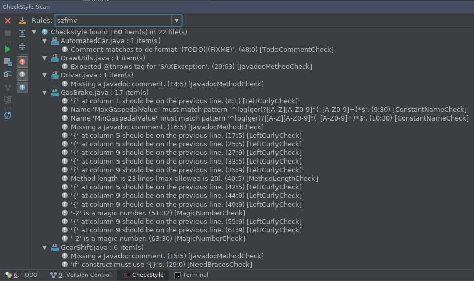
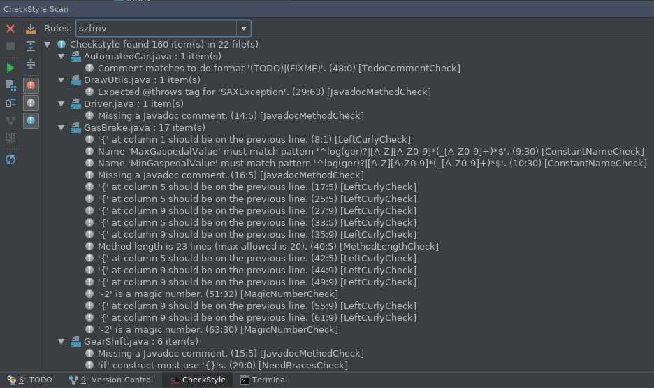

IntelliJ IDEA - Java
A feladat Java nyelvű megoldásához ajánlott és támogatott fejlesztői környezet az IntelliJ IDEA. A Community Edition ingyenes, ez tartalmaz mindent amire szükség lehet a félév során.Egyetemi e-mail címmel elvileg ingyen igényelhető Pro verzió.
Kódformázás
IDEA beállításai alapértelmezetten elvileg megfelelnek az elvárásoknak, így egy fájl befejezése után (de értelem szerűen commit előtt) célszerű egy formázást megejteni: Code > Reformat Code (CTRL+ALT+L)
- A behúzás beállítása: File > Settings > Editor > Code Style > Java > Tabs and Indents: nem tab, de 4 karakternyi
- A sorhossz beállítása: File > Settings > Editor > Code Style > Default Options > Right magin (columns) 120 kell, hogy legyen eredetileg
- Emellett default beállításokban a vessző és kettőspont utáni szóközök, illetve az operátorokat körbevevő szóközök is szerepelnek. Továbbá a kapcsos zárójelek használata is az elvártnak megfelelően van beállítva.
Save actions
Mivel a Reformat Code nyomogatását az ember hajlamos elfelejteni, létezik egy IDEA bővítmény a probléma automatizálására. Ez nem más mint a Save Actions plugin, mely lehetővé teszi, hogy az amúgy is használt mentés (CTRL+S) parancshoz lehessen kötni a kódformázási műveletet.
A Save Actions plugin konfigurálását az alábbiak szerint kell megejteni.

Zárójeles megjegyzés, hogy ez akkor fog tisztességesen működni, ha az IDEA kódformázási előírásai megfelelően vannak beállítva, vagy legrosszabb esetben default-on lett hagyva minden (már akkor is képes megszüntetni a Checkstyle-ben rögzített problémák jelentős részét).
Checkstyle plugin
A Checkstyle egy statikus kódelemző szoftver Java nyelvhez, amely egyrészt a kódformázási előírások betartását, másrészt egyéb programozástechnikai előírások betartását is ellenőrzi.
Checkstyle plugin beállítása IntelliJ IDEA környezetbe. A plugin telepíthető a plugin managerből majd a következő beállításokra van szükség:
File > Settings > Other Settings > Checkstyle > Configuration File panelen Add és a projekt gyökérben megtalálható checkstyle.xml fájlt kell neki megadni (és elnevezni valamiként, az alábbi képen szfmv). Innentől a fejlesztői környezeten belül elérhető a kódminőség-ellenőrzés valós időben, warning-okkal jelzi a találatokat.
 

Tesztlefedettség
A kód „minőség” egy mérőszáma lehet, hogy mekkora része van (unit)tesztekkel lefedve. Ezt a projekt README-ben a Coveralls.io szolgáltatás folyamatosan meg is jeleníti.
Ehhez a JaCoCo-t használjuk, ami Maven-en keresztül (a pom.xml-ben) lett beállítva. A kód tesztekkel történő lefedettségének megjelenítéséhez a fejlesztői környezetek mindenféle okos eszközöket is rendelkezésre bocsátanak.
Az IntelliJ IDEA-ban beépített megoldás is van, illetve olyan külső eszközöket is képes használni mint a JaCoCo. Képes arra, hogy színkódokkal megfesse az egyes metódusokat annak megfelelően, hogy van-e hozzá teszt.
A beállításához meg kell nyitni a Run/debug configuration ablakot, majd a Code Coverage fülön kiválasztani az IntelliJ IDEA-t vagy a JaCoCo-t, előbbi Tracing típusú vizsgálatot is tud (ami jelenleg mindegy). Ezután a Run menü Run 'Main' with Coverage menüpontjával a kódot úgy futtatja, hogy a számításokat el is végzi és megjeleníti az összesítő panelt.
Az IDEA-n kívül más IDE-khez is megtalálhatóak hasonló funkciók: NetBeans, Eclipse
Képernyőképek


Logolás - Log4J
Módfelett udvariatlan, káros és így kerülendő hibakeresési céllal a standard kimenetre (System.out.println) írni. Ettől még sokan megteszik mondván addig nincs baj, míg nem kerül pusholásra a közös repóba. Csakhogy a kódolás hevében könnyen ott felejthet az ember egy-két ilyet, így célszerű eleve bele sem tenni!
Szerencsére több logger is létezik, amik nem csak a System.out.println nem rendeltetés szerű használatát tudják megakadályozni, de bónuszként még egy halom hasznos és kényelmes funkcióval is rendelkeznek. A projektben az Apache log4j 2.8-as verziója került bevezetésre.
Konfigurálás
A logolási beállítások egyrészt helyzetfüggőek, másrészt a fejlesztő magánügyét képezik, így nem kényszerítjük rá a másikra a kedvenc beállításainkat. Ebből következik, hogy a log4j2.xml konfigurációs állomány nincs a git verziókezelő felügyelete alatt. Példa a tartalmára [forrás]:
<?xml version="1.0" encoding="UTF-8"?>
<Configuration status="INFO">
<Appenders>
<Console name="Console" target="SYSTEM_OUT">
<PatternLayout pattern="%d{HH:mm:ss.SSS} [%t] %-5level %logger{36} - %msg%n" />
</Console>
<!--<File name="MyFile" fileName="all.log" immediateFlush="true" append="false">-->
<!--<PatternLayout pattern="%d{yyy-MM-dd HH:mm:ss.SSS} [%t] %-5level %logger{36} - %msg%n"/>-->
<!--</File>-->
</Appenders>
<Loggers>
<Root level="debug">
<AppenderRef ref="Console" />
<!--<AppenderRef ref="MyFile"/>-->
</Root>
</Loggers>
</Configuration>
A fenti fájlt a projektmappába pl. a src/main/resources/-be kell elhelyezni. Jelenlegi beállításokkal DEBUG szintű, fájlba nem ment, csupán a fejlesztői környezet konzoljára ír. A fenti fájl hiányában ERROR beállításokkal fog működni.
Szintek
A logolásnak több szintje van attól függően, hogy milyen finomságú részletekre vagyunk kíváncsiak. Ezek a szintek sorban (a legbővebbtől a legszűkebbig): ALL, TRACE, DEBUG, INFO, WARN, ERROR, FATAL, OFF. Ebből következik, hogy egy INFO szintű log üzenet meg fog jelenni DEBUG beállítások mellett, de nem fog megjelenni ERROR beállításokkal.
Példa a használatára
package hu.oe.nik.automatedcar.demo;
import org.apache.logging.log4j.LogManager;
import org.apache.logging.log4j.Logger;
public class Demo {
private static final Logger LOGGER = LogManager.getLogger();
public void demo(){
LOGGER.debug("Ez egy debug szintű üzenet");
LOGGER.error("Ez egy error szintű üzenet");
}
}
További leírás
Maven és a proxy
Ha valaki céges gépen dolgozik előírt proxy mellett, érdemes figyelni arra, hogy a maven-nek külön kell konfigurálni a proxy-t.
Függőségeket tartalmazó futtatható .jar állomány létrehozása
mvn clean compile assembly:single
Az eredmény a target/AutomatedCar-jar-with-dependencies.jar